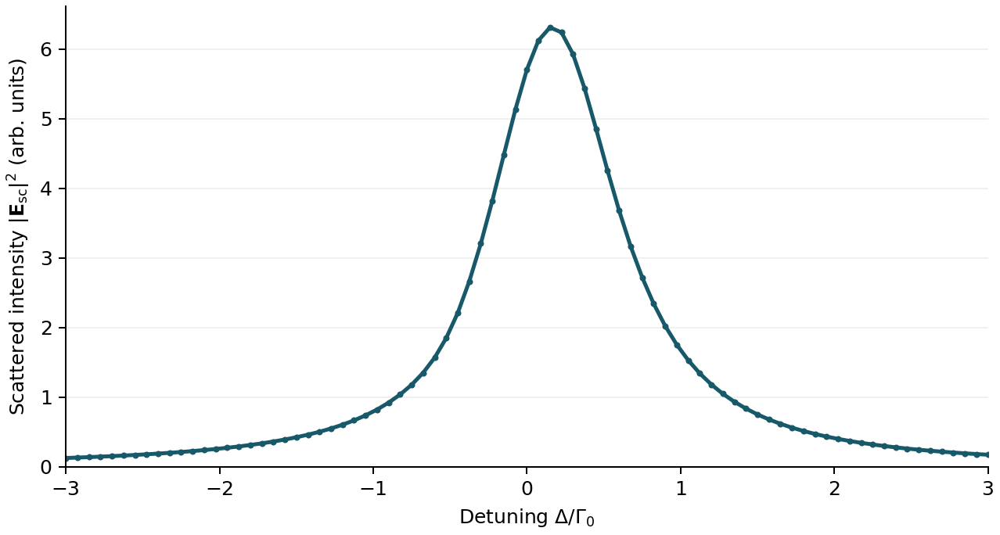

ShiftedGMRES.jl
Detector spectrum of a sparse dipole array
A local drive excites one site of a \(320\times320\) square array. At each of 81 detunings we solve \((A+\Delta I)x=b\) for all 102,400 dipole amplitudes and sum their electric fields at a detector. ShiftedGMRES.jl shares one Arnoldi basis across the detunings in each restart cycle.

Download the scan (CSV) · Solver and runnable example (ZIP) · FreeSpaceGreens.jl (ZIP)
What makes the matrix sparse?
The example models coherent exchange along the four nearest-neighbor bonds of each interior site, with open boundaries and local coherence damping \(\Gamma_0/2\). This choice gives 510,720 nonzero entries. A full free-space dipole interaction couples every pair and gives a dense matrix. The lattice spacing is \(0.35\lambda\), all dipoles point along \(x\), and the bond strengths are the real parts of the free-space couplings for the two bond orientations. Frequencies are in units of the single-emitter population decay rate \(\Gamma_0\).
Jx = real(hybrid_coupling([spacing, 0., 0.], dipole, dipole; k))
Jy = real(hybrid_coupling([0., spacing, 0.], dipole, dipole; k))
bonds = spdiagm(-1 => ones(side-1), 1 => ones(side-1))
unit = spdiagm(0 => ones(side))
A = 0.5im*I - Jx*kron(unit, bonds) - Jy*kron(bonds, unit)
result = shifted_gmres(A, drive, detunings; restart=24, rtol=1e-9)From amplitudes to the detector field
The driven site is at the origin and the detector is at \((0.6,-0.4,2.5)\lambda\). Each column of the \(3\times102{,}400\) detector matrix is the full finite-distance field from a unit dipole at one site. Every source contributes to this sum. The plotted intensity is \(|\mathbf E_{\rm sc}|^2\) in arbitrary units. The CSV gives the real and imaginary parts of all three scattered-field components.
for (site, xy) in enumerate(Iterators.product(coords, coords))
r = detector - [xy[1], xy[2], 0.0]
to_detector[:, site] = green_tensor(r; k) * dipole
end
E = to_detector * result.X
intensity = vec(sum(abs2, E; dims=1))The sweep took 48 shared Arnoldi steps. The largest relative residual over all 81 systems was \(1.53\times10^{-11}\). At \(\Delta/\Gamma_0=-3,\,0,\,+3\), separate sparse LU solves agreed with the dipole amplitudes, complex detector field, and intensity to relative tolerance \(10^{-8}\).
Run the scan
Extract both ZIP files into one empty directory and start Julia there. The example prints the shared iteration count, solve time, maximum residual, and on-resonance field and intensity. The timed section covers the shifted solve after compilation. It excludes matrix assembly, detector propagation, and the three reference solves.
pushfirst!(LOAD_PATH, pwd())
include("ShiftedGMRES.jl/examples/sparse_dipole_array.jl")